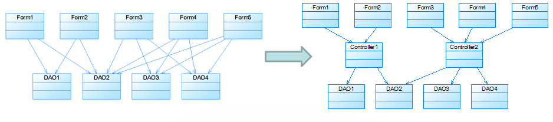

面向对象设计原则概述
单一职责原则
开闭原则
里氏代换原则
依赖倒转原则
接口隔离原则
合成复用原则
迪米特法则
面向对象设计原则概述
软件的复用(Reuse)或重用拥有众多优点，比如可以提高软件的开发效率，提高软件质量，节约开发成本，恰当的复用还可以改善系统的可维护性。面向对象设计复用的目标在于实现支持可维护性的复用。
在面向对象的设计里面，可维护性复用都是以面向对象设计原则为基础的，这些设计原则首先都是复用的原则，遵循这些设计原则可以有效地提高系统的复用性，同时提高系统的可维护性。
面向对象设计原则和设计模式也是对系统进行合理重构的指南针，重构(Refactoring)是在不改变软件现有功能的基础上，通过调整程序代码改善软件的质量、性能，使其程序的设计模式和架构更趋合理，提高软件的扩展性和维护性。
常用的面向对象设计原则包括7个，这些原则并不是孤立存在的，它们相互依赖，相互补充。
| 设计原则名称 | 设计原则简介 | 重要性 |
|---|---|---|
| 单一职责原则(Single Responsibility Principle, SRP) | 类的职责要单一，不能将太多的职责放在一个类中 | ★★★★☆ |
| 开闭原则(Open-Closed Principle, OCP) | 软件实体对扩展是开放的，但对修改是关闭的，即在不修改一个软件实体的基础上去扩展其功能 | ★★★★★ |
| 里氏代换原则(Liskov Substitution Principle, LSP) | 在软件系统中，一个可以接受基类对象的地方必然可以接受一个子类对象 | ★★★★☆ |
| 依赖倒转原则(Dependency Inversion Principle, DIP) | 要针对抽象层编程，而不要针对具体类编程 | ★★★★★ |
| 接口隔离原则(Interface Segregation Principle, ISP) | 使用多个专门的接口来取代一个统一的接口 | ★★☆☆☆ |
| 合成复用原则(Composite Reuse Principle, CRP) | 在系统中应该尽量多使用组合和聚合关联关系，尽量少使用甚至不使用继承关系 | ★★★★☆ |
| 迪米特法则(Law of Demeter, LoD) | 一个软件实体对其他实体的引用越少越好，或者说如果两个类不必彼此直接通信，那么这两个类就不应当发生直接的相互作用，而是通过引入一个第三者发生间接交互 | ★★★☆☆ |
下面详细地介绍这7个原则。
单一职责原则
定义：一个对象应该只包含单一的职责，并且该职责被完整地封装在一个类中。（就一个类而言，应该仅有一个引起它变化的原因。 ）
分析：一个类（或者大到模块，小到方法）承担的职责越多，它被复用的可能性越小，而且如果一个类承担的职责过多，就相当于将这些职责耦合在一起，当其中一个职责变化时，可能会影响其他职责的运作。
类的职责主要包括两个方面：数据职责和行为职责，数据职责通过其属性来体现，而行为职责通过其方法来体现。
单一职责原则是实现高内聚、低耦合的指导方针，在很多代码重构手法中都能找到它的存在，它是最简单但又最难运用的原则，需要设计人员发现类的不同职责并将其分离，而发现类的多重职责需要设计人员具有较强的分析设计能力和相关重构经验。
开闭原则
定义：一个软件实体应当对扩展开放，对修改关闭。也就是说在设计一个模块的时候，应当使这个模块可以在不被修改的前提下被扩展，即实现在不修改源代码的情况下改变这个模块的行为。
分析：抽象化是开闭原则的关键（设立抽象层）。 开闭原则还可以通过一个更加具体的“对可变性封装原则”来描述，对可变性封装原则(Principle of Encapsulation of Variation, EVP)要求找到系统的可变因素并将其封装起来。
一般可以通过建立抽象层（里氏代换原则）、从配置文件中读取具体参数、反射机制来达成开闭原则。
里氏代换原则
定义：如果对每一个类型为S的对象o1，都有类型为T的对象o2，使得以T定义的所有程序P在所有的对象o1都代换o2时，程序P的行为没有变化，那么类型S是类型T的子类型。（所有引用基类（父类）的地方必须能透明地使用其子类的对象。）
分析：里氏代换原则可以通俗表述为：在软件中如果能够使用基类对象，那么一定能够使用其子类对象。把基类都替换成它的子类，程序将不会产生任何错误和异常，反过来则不成立，如果一个软件实体使用的是一个子类的话，那么它不一定能够使用基类。里氏代换原则是实现开闭原则的重要方式之一，由于使用基类对象的地方都可以使用子类对象，因此在程序中尽量使用基类类型来对对象进行定义，而在运行时再确定其子类类型，用子类对象来替换父类对象。
依赖倒转原则
定义：高层模块不应该依赖低层模块，它们都应该依赖抽象。抽象不应该依赖于细节，细节应该依赖于抽象。（要针对接口编程，不要针对实现编程。）
分析：简单来说，依赖倒转原则就是指：代码要依赖于抽象的类，而不要依赖于具体的类；要针对接口或抽象类编程，而不是针对具体类编程。实现开闭原则的关键是抽象化，并且从抽象化导出具体化实现，如果说开闭原则是面向对象设计的目标的话，那么依赖倒转原则就是面向对象设计的主要手段。
依赖倒转原则的常用实现方式之一是在代码中使用抽象类，而将具体类放在配置文件中。
“Put Abstractions in Code, Details in Metadata”（将抽象放进代码，将细节放进元数据）—— 《程序员修炼之道：从小工到专家》
依赖注入（如何将具体子类注入到使用抽象基类的方法或类中去）：
① 构造注入(Constructor Injection)：通过构造函数注入实例变量。
② 设值注入(Setter Injection)：通过Setter方法注入实例变量。
③ 接口注入(Interface Injection)：通过接口方法注入实例变量。
接口隔离原则
定义：客户端不应该依赖那些它不需要的接口。（一旦一个接口太大，则需要将它分割成一些更细小的接口，使用该接口的客户端仅需知道与之相关的方法即可。）
分析：接口隔离原则是指使用多个专门的接口，而不使用单一的总接口。每一个接口应该承担一种相对独立的角色，不多不少，不干不该干的事，该干的事都要干。使用接口隔离原则拆分接口时，首先必须满足单一职责原则，将一组相关的操作定义在一个接口中，且在满足高内聚的前提下，接口中的方法越少越好。可以在进行系统设计时采用定制服务的方式，即为不同的客户端提供宽窄不同的接口，只提供用户需要的行为，而隐藏用户不需要的行为。
合成复用原则
定义：尽量使用对象组合，而不是继承来达到复用的目的。
分析：合成复用原则就是指在一个新的对象里通过关联关系（包括组合关系和聚合关系）来使用一些已有的对象，使之成为新对象的一部分；新对象通过委派调用已有对象的方法达到复用其已有功能的目的。简言之：要尽量使用组合/聚合关系，少用继承。
继承复用和组合复用的比较：
继承复用：实现简单，易于扩展。但会破坏系统的封装性；从基类继承而来的实现是静态的，不可能在运行时发生改变，没有足够的灵活性；只能在有限的环境中使用。在使用继承时，需要严格遵循里氏代换原则，有效使用继承会有助于对问题的理解，降低复杂度，而滥用继承反而会增加系统构建和维护的难度以及系统的复杂度，因此需要慎重使用继承复用。（“白箱”复用 ）
组合/聚合复用：可以使系统更加灵活，类与类之间的耦合度相对较低，选择性地调用成员对象的操作；可以在运行时动态进行。（“黑箱”复用 ）
迪米特法则
定义：不要和“陌生人”说话（只与你的直接朋友通信）（每一个软件单位对其他的单位都只有最少的知识，而且局限于那些与本单位密切相关的软件单位）
分析：简单地说，迪米特法则就是指一个软件实体应当尽可能少的与其他实体发生相互作用。这样，当一个模块修改时，就会尽量少的影响其他的模块，扩展会相对容易，这是对软件实体之间通信的限制，它要求限制软件实体之间通信的宽度和深度。
① 狭义的迪米特法则：可以降低类之间的耦合，但是会在系统中增加大量的小方法并散落在系统的各个角落，它可以使一个系统的局部设计简化，因为每一个局部都不会和远距离的对象有直接的关联，但是也会造成系统的不同模块之间的通信效率降低，使得系统的不同模块之间不容易协调。
② 广义的迪米特法则：指对对象之间的信息流量、流向以及信息的影响的控制，主要是对信息隐藏的控制。信息的隐藏可以使各个子系统之间脱耦，从而允许它们独立地被开发、优化、使用和修改，同时可以促进软件的复用，由于每一个模块都不依赖于其他模块而存在，因此每一个模块都可以独立地在其他的地方使用。一个系统的规模越大，信息的隐藏就越重要，而信息隐藏的重要性也就越明显。
迪米特法则的主要用途在于控制信息的过载：
在类的划分上，应当尽量创建松耦合的类，类之间的耦合度越低，就越有利于复用，一个处在松耦合中的类一旦被修改，不会对关联的类造成太大波及；
在类的结构设计上，每一个类都应当尽量降低其成员变量和成员函数的访问权限；
在类的设计上，只要有可能，一个类型应当设计成不变类；
在对其他类的引用上，一个对象对其他对象的引用应当降到最低。
